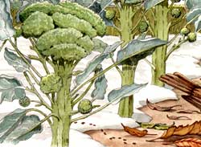

In this photo, frost has wiped out our tender crops. The wheelbarrow at the far right is loaded with manure which is to be spread over bare ground and covered with hay mulch to hold nutrients and protect the soil.